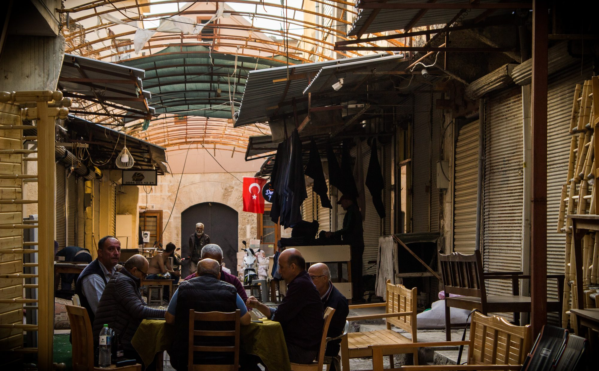
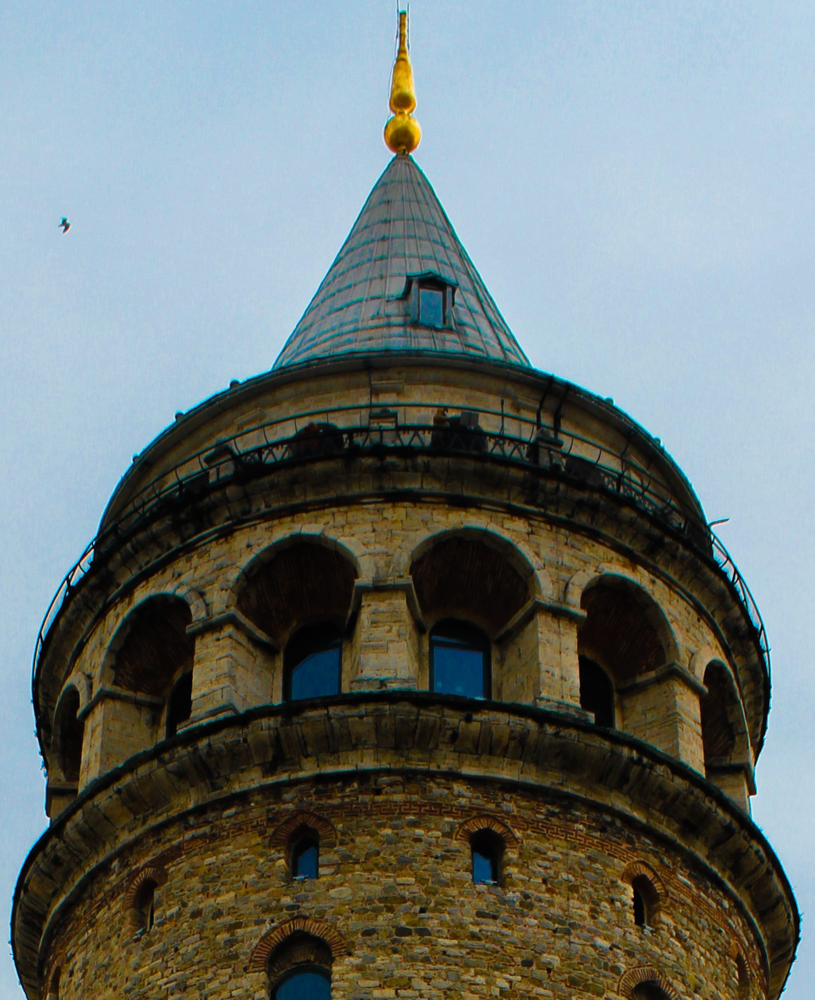

Deniz & Işık
Şehir burada suya yaslanır. Güneş alçalınca gemi, martı ve kıyı tek bir silüete dönüşür; Boğaz bir manzara değil, günlük bir sahne olur.
Galeriye git
Kısa hikâye
refolyf, bir yerin adını değil bir bakışı taşır. Gün batımında Boğaz’ın silüeti, yokuştan denize açılan sokak, sisli ormanda suya düşen ağaç — hepsi aynı cümleye bağlanır: ışık geldiğinde zaman yavaşlar.
Bu karelerde şehir manzara değildir; günlük bir sahne, bir nefes, bir bekleyiştir. İnsanlar, martılar, tekneler ve taş yapılar aynı karede buluşur. Fotoğraf, o anı tutmak için durur — asıl araç gözdür.
Beş seride 79 kare. Denizden ormana, sokaktan geceye — şehrin ve doğanın ritmi. Yeni kareler için Instagram’da buluşalım.
Arşiv
Beş bölüm. Denizden ormana, sokaktan geceye — şehrin ve doğanın ritmi.
Şehir burada suya yaslanır. Güneş alçalınca gemi, martı ve kıyı tek bir silüete dönüşür; Boğaz bir manzara değil, günlük bir sahne olur.
Galeriye git
Kalabalık durunca hikâye başlar — kapalı çarşıda sohbet, yokuştan denize bakış, eski bir araba. Şehir, insanların temposunda yazılır.
Galeriye git
Gece, şehri siyah-beyaza çevirir. Bekleyenler karanlıkta kalır; vitrinler ve neon tek renk gibi yanar.
Galeriye git
Yaprağı düşmüş ağaçlar suya düşer. Sis, gökyüzü ile toprağı ayırır; doğa burada sessiz ama kalabalık bir korodur.
Galeriye git
Taş, zamanı tutar — kemerler, tuğla, kule külahı. Mimari, şehrin sabit yüzüdür.
Galeriye git